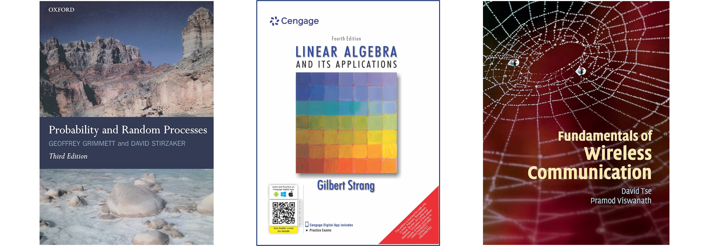
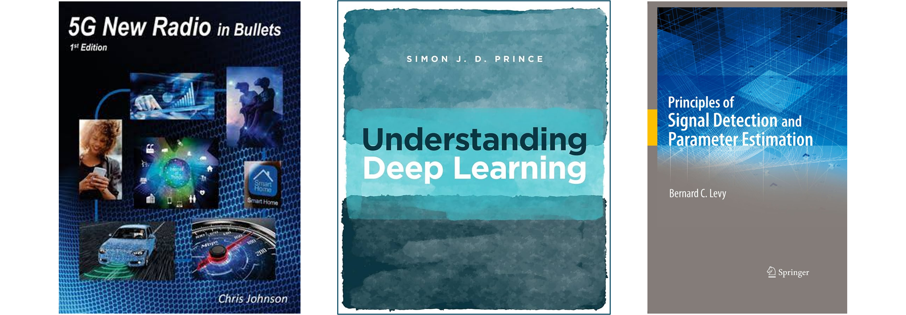
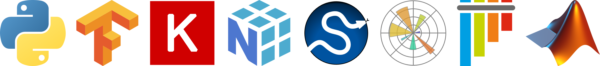

Learning Resources
It is important to have a strong understanding of the fundamentals of wireless communication, signal processing, machine learning, and 3GPP 5G standards to fully grasp the content of this website. While not all of these prerequisites are required for every topic, a solid foundation in these areas will significantly enhance your understanding of the material.
Pre-requisites: Must have
The following subjects are crucial ti understand the physical layer and scheduler design aspects of ISAC in 3GPP. Reader is expected to have a good understanding of these subjects before diving into the content of this website.
- Probability and Random Processes
Reference: Probability and Random Processes by Geoffrey Grimmett and David Stirzaker.
- Linear Algebra and Matrix Theory
Reference: Linear Algebra and Its Applications by Gilbert Strang.
- Fundamentals of Wireless Communication
Reference: Fundamentals of Wireless Communication by David Tse & Pramod Viswanath.
{kind=link}

Pre-requisites: Optional
Following subjects are not mandatory but will be helpful to understand the content of this website. Reader is expected to have a good understanding of these subjects to get the most out of the content of this website.
- Fundamentals of 5G-NR Standards
Reference: 5G-NR in Bullets by Chris Johnson.
Reference: 5G NR: The Next Generation Wireless Access Technology (Edition-1 | Edition-2 | Edition-3) by Erik Dahlman, Stefan Parkvall and, Johan Skold.
- Artificial Intelligence and Machine Learning
Reference: Understanding Deep Learning by Simon J. D. Prince.
- Detection and Estimation Theory
Reference: Principles of Signal Detection and Parameter Estimation by Bernard C. Levy.
{kind=link}

Coding Skills
I intend to provide code snippets in Python and MATLAB to illustrate the concepts and algorithms discussed in this website. It is recommended to have a good understanding of Python and MATLAB programming to fully benefit from these code snippets.
- Python coding
TensorFlow
Keras
NumPy
SciPy
Matplotlib
Pytest
Sphinx Documentation
- MATLAB scripting
5G Toolbox
{kind=link}
